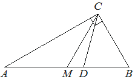

historical_editorial50
Предварительные разборы, внешнего эталона нет.
| Острый угол прямоугольного треугольника равен Найдите величину угла между биссектрисой и медианой проведёнными из вершины прямого угла Ответ дайте в градусах. |  |
{
"complete": true,
"included": true,
"exclusion_reasons": [],
"author_mode": "historical_shared_context",
"author_path": null,
"auditor_path": null,
"feedback_ref": null,
"source_run": "data/annotation/runs/2026-10-31-fipi-50x1"
}{
"task_id": "D68789",
"solution_status": "solved",
"answer": "25°",
"steps": [
{
"id": "s1",
"action": "Использовать свойство медианы к гипотенузе",
"result": "В прямоугольном ABC середина M гипотенузы AB равноудалена от A,B,C. Поэтому BM=CM и ∠BCM=∠CBM=70°.",
"kc_ids": [
"k1",
"k2"
],
"input_refs": [
"condition"
]
},
{
"id": "s2",
"action": "Использовать определение биссектрисы прямого угла",
"result": "CD делит угол C=90° пополам, значит ∠BCD=45°.",
"kc_ids": [
"k3"
],
"input_refs": [
"condition"
]
},
{
"id": "s3",
"action": "Найти разность углов лучей внутри прямого угла",
"result": "Медиана CM составляет с CB угол 70°, биссектриса CD — 45°. Угол DCM=70°-45°=25°.",
"kc_ids": [
"k4"
],
"input_refs": [
"s1",
"s2"
]
}
],
"kc_candidates": [
{
"id": "k1",
"name": "Использовать медиану к гипотенузе",
"description": "Середина гипотенузы прямоугольного треугольника равноудалена от трёх вершин; медиана равна половине гипотенузы."
},
{
"id": "k2",
"name": "Выражать углы равнобедренного треугольника",
"description": "Равные стороны дают равные противолежащие углы."
},
{
"id": "k3",
"name": "Использовать определение биссектрисы угла",
"description": "Разделить заданный угол на два равных угла, проверив, что луч является его биссектрисой."
},
{
"id": "k4",
"name": "Находить угол между лучами по общей стороне",
"description": "Сопоставить положения лучей и вычесть или сложить известные углы с общей стороной."
}
],
"methods": [
{
"id": "m1",
"name": "Использовать медиану к гипотенузе и половину прямого угла",
"step_ids": [
"s1",
"s2",
"s3"
]
}
],
"warnings": []
}null
[
{
"task_id": "D68789",
"local_id": "k1",
"canonical_id": "literal_5140d12e0e85",
"decision_basis": "identical_name_and_description_only",
"source_name": "Использовать медиану к гипотенузе",
"source_description": "Середина гипотенузы прямоугольного треугольника равноудалена от трёх вершин; медиана равна половине гипотенузы.",
"evidence": [
{
"step_id": "s1",
"action": "Использовать свойство медианы к гипотенузе",
"result": "В прямоугольном ABC середина M гипотенузы AB равноудалена от A,B,C. Поэтому BM=CM и ∠BCM=∠CBM=70°."
}
]
},
{
"task_id": "D68789",
"local_id": "k2",
"canonical_id": "isosceles_angles",
"decision_basis": "explicit_editorial_operation_group",
"source_name": "Выражать углы равнобедренного треугольника",
"source_description": "Равные стороны дают равные противолежащие углы.",
"evidence": [
{
"step_id": "s1",
"action": "Использовать свойство медианы к гипотенузе",
"result": "В прямоугольном ABC середина M гипотенузы AB равноудалена от A,B,C. Поэтому BM=CM и ∠BCM=∠CBM=70°."
}
]
},
{
"task_id": "D68789",
"local_id": "k3",
"canonical_id": "literal_57221556b432",
"decision_basis": "identical_name_and_description_only",
"source_name": "Использовать определение биссектрисы угла",
"source_description": "Разделить заданный угол на два равных угла, проверив, что луч является его биссектрисой.",
"evidence": [
{
"step_id": "s2",
"action": "Использовать определение биссектрисы прямого угла",
"result": "CD делит угол C=90° пополам, значит ∠BCD=45°."
}
]
},
{
"task_id": "D68789",
"local_id": "k4",
"canonical_id": "literal_adbf18f11761",
"decision_basis": "identical_name_and_description_only",
"source_name": "Находить угол между лучами по общей стороне",
"source_description": "Сопоставить положения лучей и вычесть или сложить известные углы с общей стороной.",
"evidence": [
{
"step_id": "s3",
"action": "Найти разность углов лучей внутри прямого угла",
"result": "Медиана CM составляет с CB угол 70°, биссектриса CD — 45°. Угол DCM=70°-45°=25°."
}
]
}
]{
"included": true,
"exclusion_reasons": [],
"source_policy_included": true,
"source_policy_exclusion_reasons": []
}